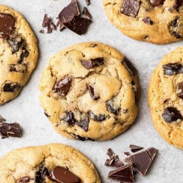

Chocolate Chip Cookies

Extremely delicious chocolate chip cookies, made quickly with ingredients you can get quick and easy!
Ingredients
- 1 cup salted butter softened
- 1 cup granulated sugar
- 1 cup light brown sugar packed
- 2 teaspoons pure vanilla extract
- 2 large eggs
- 3 cups all-purpose flour
- 1 teaspoon baking soda
- 1/2 teaspoon baking powder
- 1 teaspoon sea salt
- 2 cups chocolate chips (14 oz)
Instructions
- Preheat oven to 375F
- Mix flour, baking sodda, baking powder, and salt
- Cream together butter and sugars until combined
- Beat in eggs and vanilla until light
- Mix in the dry ingredients until combined
- Addd chocolate chips and mix well
- Roll 2-3 tablespoons of dought at a time into balls and place on baking sheets lined with parchment paper
- Bake for about 8-10 minutes. Take out when they are just barely starting to turn brown
- Let sit on baking pan for 5 minutes before moving to cooling rack